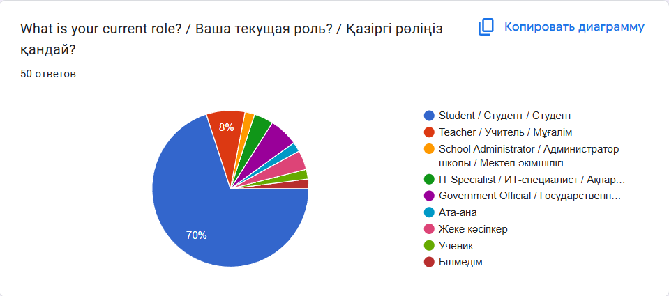
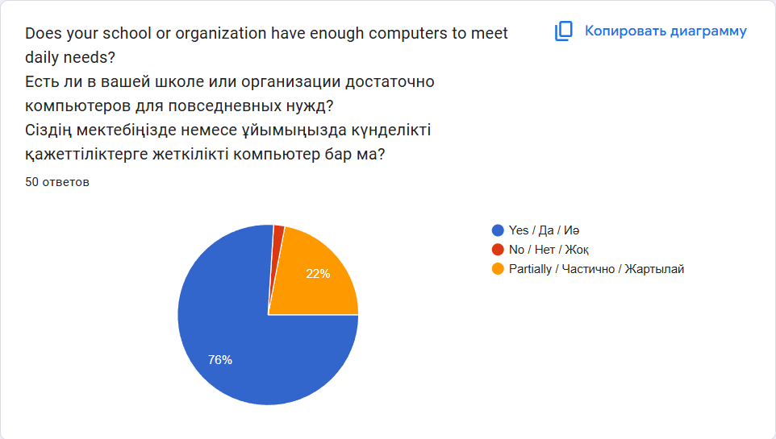
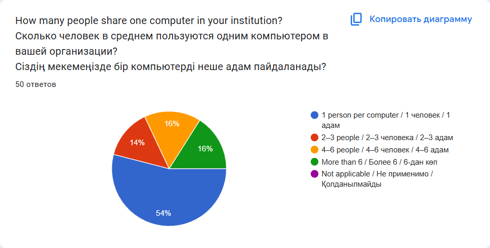
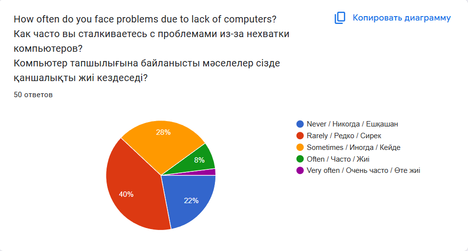

Research Based on Survey Results in Kazakhstan
The topic of the research is the lack of computers in schools and organizations and how it affects different sectors. A Google Forms survey was conducted among 50 participants including students, teachers, school administrators, civil servants, and IT employees.
72% were students, 8% teachers, 2% administrators, 6% civil servants, and 12% IT professionals or private entrepreneurs.
76% of respondents said computers are sufficient, but 24% said they lack them, meaning 1 in 4 people experiences difficulties.
On average, 54% use one computer individually, while others share: 2–3 people (14%), 4–6 people (16%), and 6+ people (16%).
Only 22% never have trouble accessing a computer. Most (78%) face this problem sometimes or often.
The main causes of the lack of computers in schools and organizations in Kazakhstan appear to be systemic and financial in nature. According to the survey, 52% of respondents believe that the root of the problem lies in insufficient budget allocation and lack of state funding for digital infrastructure. Another 10% attributed the issue to corruption, which hinders the fair and timely distribution of resources. Meanwhile, 16% pointed out that complicated and inefficient supply chains, as well as unreliable suppliers, delay or prevent the acquisition of essential technology.
These problems directly affect the learning and working environments of students and professionals. Teachers reported that in the absence of enough computers, students are often forced to use their mobile phones for classwork, which not only distracts them but also reduces their concentration and overall academic performance. Students also noted that limited access to technology caused delays in completing important assignments and group projects. In organizations, the shortage of computers leads to decreased productivity, slower communication, and a heavy reliance on outdated systems.
Respondents provided several suggestions to solve this issue. 26% of them recommended selling old or unused budget computers from other institutions or government offices and redistributing them to schools. This could serve as a short-term relief and provide temporary access to needed technology.
Another 28% of participants proposed that the government should allocate more targeted and regulated funding specifically for the purchase of modern computer equipment for educational and public service institutions. Long-term investment in digital resources is considered vital for progress.
Additionally, 6% emphasized the importance of combating corruption. They suggested that tighter rules and transparent auditing systems could ensure that money allocated for technology is used properly and efficiently.
The results of the survey clearly support the original hypothesis: the shortage of computers negatively impacts education, efficiency, and digital growth. Limited access to computers creates inequality among students, restricts access to modern learning tools, and slows down the pace of lessons and tasks. It also widens the digital gap between those who have resources at home and those who rely entirely on school or office computers.
One of the biggest obstacles during this research was the data collection process. Due to a short deadline and the remote nature of the survey, many responses were brief and lacked detailed explanation. Some participants did not fully understand the importance of their answers, which affected the depth of the results. If this survey were conducted in person, more thoughtful and specific responses might have been gathered.
In conclusion, this research highlights a major problem that affects not only the education sector but also many government and private organizations. The lack of computers is a barrier to productivity, innovation, and equal opportunity. Both the survey data and external sources point to the same core issues — insufficient funding, corruption, and poor distribution systems.
Addressing this issue requires a multi-step approach. Governments and policymakers must prioritize investment in digital education and workplace infrastructure. Partnerships with reliable technology suppliers should be developed, and transparency must be enforced in how funding is used. Only through coordinated effort can Kazakhstan ensure that every student and worker has access to the technology they need to thrive in the modern world.